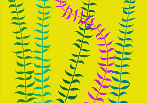

| Turtle | |
| A Library by Leah Buechley for the Processing programming environment. The Turtle library provides an implementation of a LOGO Turtle for Processing. Turtle Geometry (see the fabulous book of the same name by Hal Abelson and Andrea diSessa) provides a different way of thinking about geometry. You draw by driving around a "turtle". Programs are written from the point of view of this turtle, which enables you to take an embodied approach to geometry. LOGO, a turtle-based programming language, was developed by Seymour Papert and a group of collaborators in the late 1960s. It was presented as a novel way to introduce children to computer programming and mathematics. LOGO and Turtle Geometry remain strongly associated with children and education, but are full of beautiful tools and ideas that adult artists and programmers can fruitfully explore. A previous turtle library for Processing, Terrapin, is great, but somewhat limited in functionality. This library provides a more full-featured implementation, including "push" and "pop" functionality as well as high-resolution drawing capabilities. DOWNLOAD Download Turtle in .zip format.INSTALL Unzip the Turtle.zip file and add the unzipped "Turtle" folder into your Processing libraries folder. See more info under Manual Install here.EXAMPLES Find a list of examples in the current distribution of Turtle, or have a look at them by following the links below. Library reference also contains examples. SOURCE CODE The source code of Turtle is available at https://github.com/leahbuechley/Turtle, and its repository can be browsed here: https://github.com/leahbuechley/Turtle.git. by Leah Buechley 2016 Page format inspired by Carl Emil Carlsen's point2line library documentation. |
ReferenceBasicsforward ()back () right () left () penUp () penDown () push () pop () goToPoint () drawTurtle () Turtle StategetX ()getY () getHeading () setX () setY () setHeading () Other Handy StuffclearTurtleHistory ()setWrapAround () |